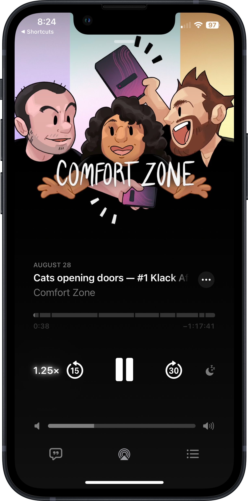
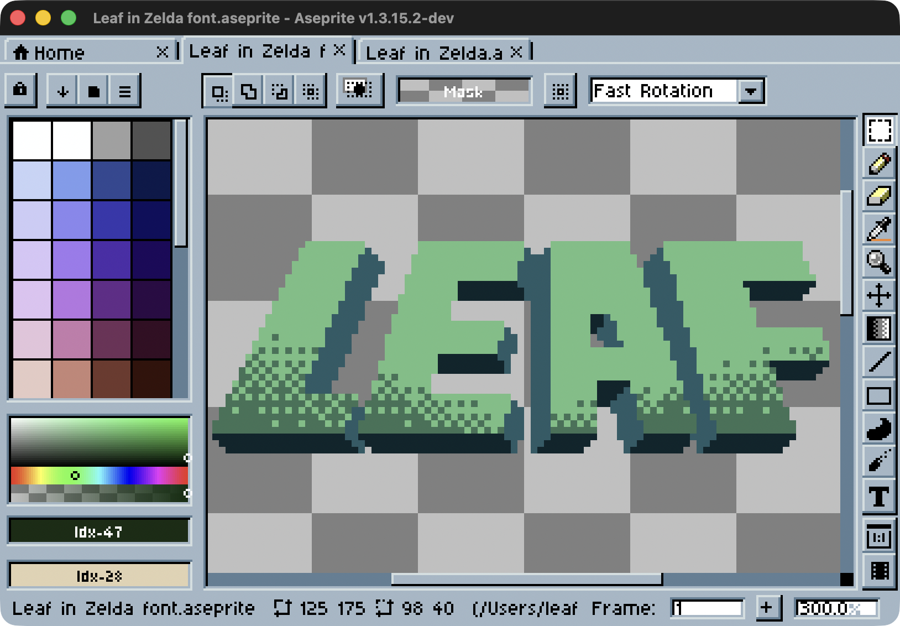
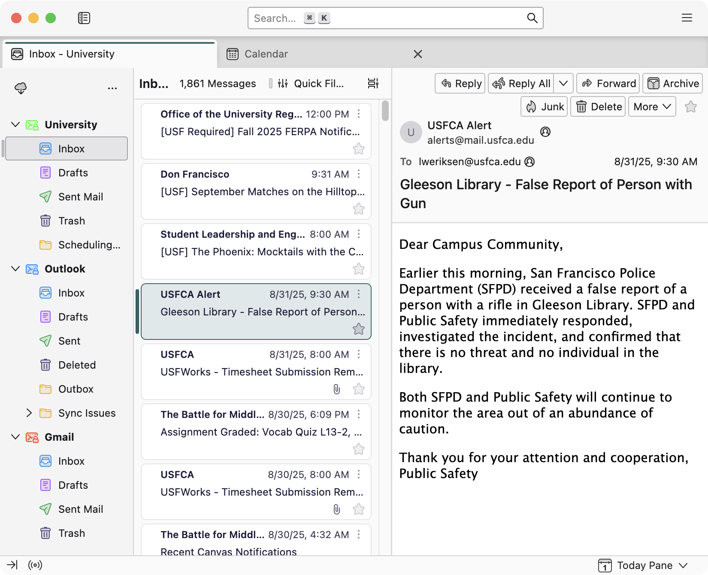
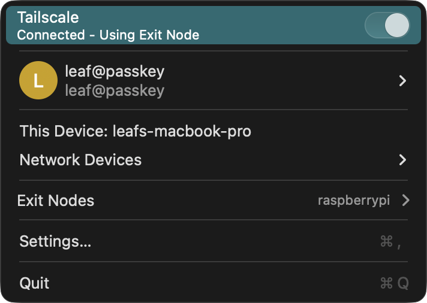

The Feed
Back
Bookplayer, the best m3b player.

Apple Podcasts, cause it's fine.
Nintendo 3DS, cause there's no emulating these vibes.

My preferred pixel art program, Aseprite.
Elfeed RSS Reader in Emacs.
Elfeed RSS Reader in Emacs.
Programming environment, also in Emacs.

Thunderbird, because every other email client is just some form of masochism.

Tailscale, for bouncing traffic back home.
Phanpy, my favorite client for Mastodon.
My standing desk, because there's no way am I'm sitting with those ergonomics.
My favorite dongle, because we are never quite out of dongletown.